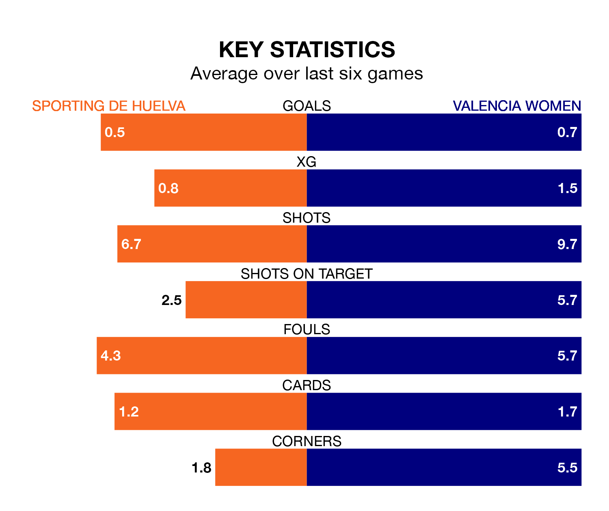

Sporting de Huelva welcome Valencia Women to Campo Federativo de la Orden on early Saturday looking to pick up points to end their three-game losing streak.
Sporting's struggles have left them with just three points from their last six Liga F matches, while their opponents have earned four from a possible 18.
Sporting are bottom of the table after 17 games, of which they have won one and drawn one, earning four points.
Valencia are four places ahead of the home team in 12th, with four wins and three draws putting them on 15 points.
In the last 10 years, Sporting and Valencia have played each other on 18 occasions. Sporting won five of them, Valencia nine, and they drew four times.
On average, Sporting scored 0.9 goals and Valencia 1.6 in those matches.
Their last meeting was on November 4, when Valencia won 2-0 at home.
With 10 goals in 17 games so far this season, Sporting are the league's lowest scorers with 0.6 goals per game. And they are conceding more than average, letting in 38 goals at a rate of 2.2 per game.
The visitors are also below average scorers, with 1.1 goals per game, compared to a league average of 1.6. They have conceded 2.4 goals per game.
Sporting's last match was on Sunday, a 2-1 loss against Athletic Club Women, with Raiderlin Nazareth Carrasco Vargas getting the goal for Sporting.
Valencia lost 1-0 against Villarreal Women last time out, on Saturday.
Updated: 09:02 (UTC), 13/02/24